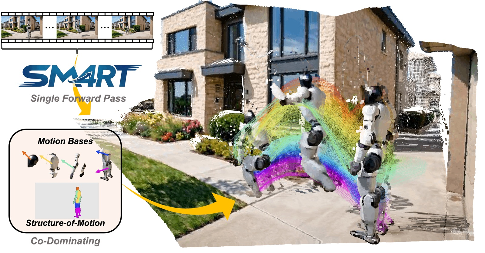
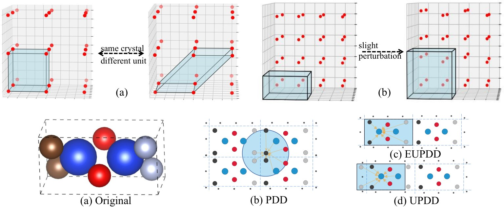
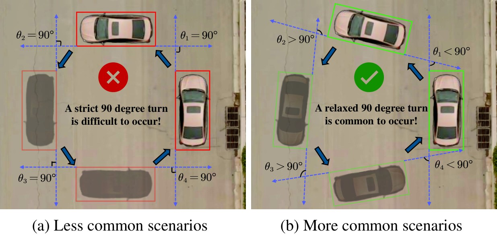
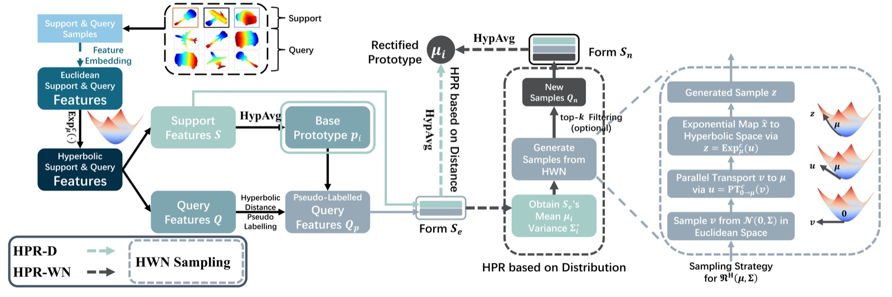

Recent Advances of Geometric Deep Learning
A review of recent advances in geometric deep learning, with a systematic summary of our group's works.
M.Sc.Eng. Candidate · Control Science & Engineering · Tsinghua IVG
I study how geometry shapes representation learning, from hyperbolic spaces and matrix manifolds to 4D vision and spatial intelligence.
I am an M.Sc.Eng. candidate in Control Science and Engineering, specializing in Pattern Recognition and Intelligent Systems (academic-track, comparable to an MPhil) at the Intelligent Vision Group, Department of Automation, Tsinghua University, co-supervised by Prof. Jie Zhou and Prof. Jiwen Lu. Before that, I received my B.Eng. in Artificial Intelligence from the School of AI, UCAS (2025) and visited CSE @ HKUST (2024). I was fortunate to have Prof. Cheng-Lin Liu as my academic supervisor during undergrad, and served as PI of a Beijing NSF Qiyan project (2023–2025) in its inaugural cohort.
arXiv
New on arXiv: SM4RT (“Feedforward Geometry of Motion” paradigm), structured motion geometry for 4D reconstruction.
Project page ↗
Award Bachelor's thesis selected as Excellent Bachelor's Thesis at UCAS, ranked 2 / 70.
Accept One paper accepted to IJCAI 2025 (CCF-A · 19.3% acceptance rate).
Oral One paper accepted to AAAI 2025 as Oral (CCF-A · 23.4% acceptance rate).
Journal
One paper accepted to Pattern Recognition (CAS Tier-1 · IF 7.5).
* equal contribution · Shing Ho J. Lin is me
New Paradigm
Humans read motion from sparse kinematic cues at the level of objects and parts; displacements are never isolated either: each is constrained to a valid rigid-body motion, a geometry known as a fiber bundle. Decomposed fully feed-forward into structured latent bases for parsimonious, interpretable 4D perception.
Follow-up · United Imaging Healthcare's endoscopic 4D foundation model SCOPE-4D is built upon this work; GAUGE integrates a new module into SM4RT, further improving its performance.

SM4RT decomposes scene motion into structured latent bases, enabling structured and parsimonious motion perception for 4D reconstruction.
@article{lin2026sm4rt,
title={SM4RT: Learning Structured Motion Geometry for 4D Reconstruction},
author={Lin, Shing Ho J. and Zheng, Wenzhao and Zhuo, Dong and Wu, Yuqi and Zhou, Jie and Lu, Jiwen},
journal={arXiv preprint arXiv:2607.22534},
year={2026}
}
Thermal vibrations break the translational symmetry of lattices; atom-weighted and unit-cell PDD descriptors keep crystal graphs continuous under perturbation.
Follow-up · cited by the ACM Computing Surveys survey Crystalline material discovery in the era of artificial intelligence.

Crystal structures can be simplified as a periodic point set that repeats across three-dimensional space along an underlying lattice. Traditionally, crystal representation methods rely on descriptors such as lattice parameters, symmetry, and space groups to characterize the structure. However, atoms in materials always vibrate above absolute zero, causing their positions to fluctuate continuously, disrupting lattice periodicity and making conventional descriptors discontinuous under slight perturbations. We introduce atom-weighted Pairwise Distance Distribution (WPDD) and Unit-cell PDD (UPDD) for the first time, applying them to construct multi-edge crystal graphs. We demonstrate the continuity and general completeness of these graphs under slight atomic position perturbations, and by modeling PDD as global information within matrix-based message passing we significantly reduce computational cost. WPDDFormer achieves state-of-the-art predictive accuracy across tasks on benchmark datasets such as the Materials Project and JARVIS-DFT.
@inproceedings{shen2025pddformer,
title={PDDFormer: Pairwise Distance Distribution Graph Transformer for Crystal Material Property Prediction},
author={Shen, Xiangxiang and Wan, Zheng and Wen, Lingfeng and Sun, Licheng and Yang, Jian and Tang, Xuan and Lin, Shing-Ho J. and He, Xiao and Chen, Mingsong and Wei, Xian},
booktitle={Proceedings of the Thirty-Fourth International Joint Conference on Artificial Intelligence, IJCAI-25},
year={2025}
}
Symmetry breaking is a cornerstone of physics and the norm of real vision. Learnable G-Biases relax strict group constraints so equivariant networks can face reality.
Follow-up · the idea is further elaborated in the ICLR 2026 paper Achieving approximate symmetry is exponentially easier than exact symmetry.

Group Equivariant Convolution (GConv) assumes uniform and strict rotational equivariance across all features. However, real-world data rarely conforms to strict rotational equivariance, a phenomenon known as Rotational Symmetry-Breaking (RSB). We propose a simple yet highly effective method that utilizes a set of learnable biases called G-Biases under the group order to break strict group constraints, achieving Relaxed Rotational Equivariant Convolution (RREConv). Extensive experiments on the discrete rotational group Cn show that RREConv-based methods outperform existing GConv-based methods in both classification and 2D object detection on natural image datasets.
@inproceedings{wu2025rreconv,
title={Relaxed Rotational Equivariance via G-Biases in Vision},
author={Wu, Z. and Liu, Y. and Sun, L. and Yang, J. and Dong, H. and Lin, Shing-Ho J. and Tang, X. and Mi, J. and Jin, B. and Wei, X.},
booktitle={Proceedings of the AAAI Conference on Artificial Intelligence},
volume={39},
year={2025}
}
Point-cloud categories form hierarchies that Euclidean features cannot capture; hyperbolic prototypes encode that structure, rectifying few-shot 3D classification without a single extra parameter.
Follow-up · cited by the ACM Computing Surveys survey Few-shot learning in video and 3D object detection: a survey.

Few-shot point cloud classification is a challenging task in 3D computer vision. Most deep learning models rely heavily on Euclidean spatial metrics, yet point cloud objects often exhibit complex non-Euclidean geometric structures with underlying inter/intra-class hierarchies that Euclidean models fail to capture. We propose Hyperbolic Prototype Rectification (HPR): point clouds are embedded into hyperbolic space to better describe hierarchical similarity relationships, and hyperbolic spatial and distributional information rectify prototypes without requiring extra learnable parameters. On real-world ScanObjectNN(-PB) datasets, average classification accuracy outperforms the SOTA method by 2.08% (0.66%), demonstrating strong generalization and robustness against perturbed data.
@article{feng2025hyperbolic,
title={Hyperbolic prototype rectification for few-shot 3D point cloud classification},
author={Feng, Y.-Z. and Lin, S.-H. J. and Tang, X. and Wang, M.-Y. and Zheng, J.-Z. and He, Z.-Y. and Pang, Z.-Y. and Yang, J. and Chen, M.-S. and Wei, X.},
journal={Pattern Recognition},
volume={158},
pages={111042},
year={2025},
publisher={Elsevier}
}
Why over-pruned weight matrices become fragile: condition number as the missing half of the Lipschitz story.
Follow-up · attracted attention from ZTE's large-model division and is now being extended to robust on-device deployment.
High compression of Deep Neural Networks, e.g., massive pruning of the weight matrix, leads to a severe drop in accuracy and susceptibility to adversarial attacks; a highly pruned weight matrix tends to be ill-conditioned, aggravating vulnerability to input noise. This work develops novel joint constraints, the Transformed Sparse Constraint joint with Condition Number Constraint (TSCNC), with smoothing distribution and differentiable constraint functions that reduce the condition number and avoid ill-conditionedness. Our theoretical analyses unveil the relevance between the condition number and the local Lipschitz constant: the sharply increasing condition number becomes the dominant factor restricting the robustness of over-sparsified models. Experiments show the proposed constraints significantly improve the robustness of DNNs at high pruning rates.
@article{feng2025lipschitz,
title={Lipschitz Constant Meets Condition Number: Learning Robust and Compact Deep Neural Networks},
author={Feng, Y. and Lin, S.-H. J. and Gao, B. and Wei, X.},
journal={arXiv preprint arXiv:2503.20454},
year={2025}
}
The problem grew out of a determinant-evaluation exercise set by recitation TA Hongsheng Hu (now Associate Professor at Hunan University) in Linear Algebra II (lectured by Prof. Ming Fang of the Institute of Mathematics, CAS) in the spring semester of 2022, my freshman year; from it one spots that the counts of even and odd derangements always differ by (−1)ⁿ⁻¹(n−1). Starting from this classical identity, the work unifies its two refinements, by fixed points and by excedances, as two marginals of a single Toeplitz determinant, and carries the graded story through the type-B hyperoctahedral group, the Alon–Tarsi constant, and a semisimple subalgebra of the symmetric group algebra.
M.Sc.Eng. in Control Science and Engineering (Pattern Recognition and Intelligent Systems)
Tsinghua University · Intelligent Vision Group
Academic-track degree (MPhil-equivalent)
Co-supervised by Prof. Jie Zhou & Prof. Jiwen Lu
Visiting Student, Department of CSE
The Hong Kong University of Science and Technology
B.Eng. in Artificial Intelligence
University of Chinese Academy of Sciences
Stage-1 advisor: Prof. Cheng-Lin Liu
Stage-2 advisor: Prof. Dong-Ming Yan
Principal Investigator, Beijing NSF Qiyan Program
Inaugural cohort
Hosted by the School of AI, UCAS and the State Key Laboratory of Multimodal AI Systems (MAIS), CAS
Worked closely with Prof. Xian Wei at ECNU
Concluded and passed final acceptance
Intern, State Key Lab of MAIS
Institute of Automation, Chinese Academy of Sciences
Excellent Bachelor's Thesis Top <10%
University of Chinese Academy of Sciences, ranked 2 / 70. Defense committee chaired by Prof. Shiming Xiang, with Prof. Jing Dong on the committee.
National 2nd Scholarship for HK, Macao & Overseas Chinese Students Highest Level
Ministry of Education of the PRC, the first recipient in UCAS history.
A review of recent advances in geometric deep learning, with a systematic summary of our group's works.